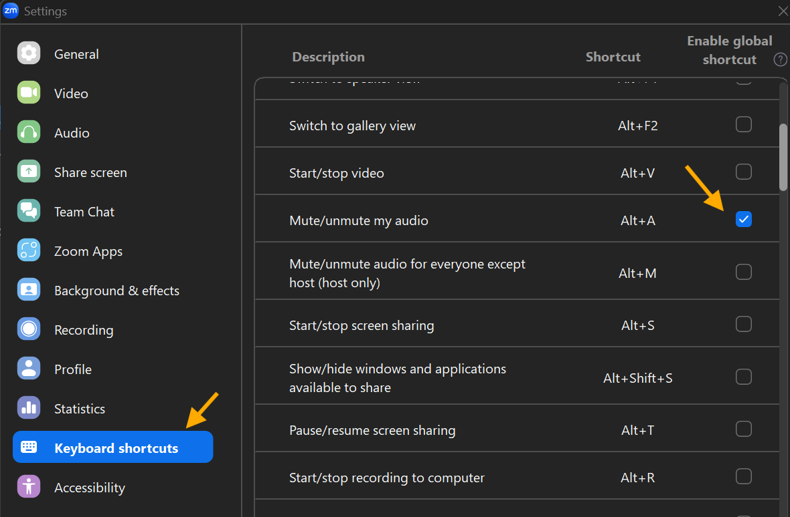
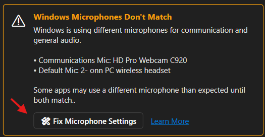
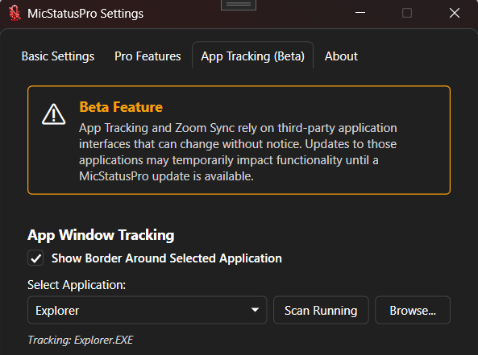

Frequently Asked Questions
Answers to common questions about hardware mute detection, meeting app syncing, virtual microphones, shortcuts, and display overlays in MicStatusPro.
Meeting Apps & Zoom Sync
Why doesn't the border change when I click the "Mute" button inside Zoom or Teams?
Many meeting apps use "Software Mute," which stops audio from being transmitted but does not mute your microphone in Windows. MicStatusPro monitors your actual Windows microphone state. For the most reliable privacy, use MicStatusPro's mute controls, Global Hotkey, or Push-to-Talk features.
For the best experience, use MicStatusPro's Global Hotkey or Push-To-Talk feature to mute yourself at the hardware level—this guarantees complete privacy.
Why does my Windows mic mute/unmute, but Zoom stays out of sync?
💡 Zoom Sync Mode requires Zoom's Global Shortcut option to be enabled for Mute/Unmute My Audio (Alt+A).

To keep Zoom synchronized:
- Open Zoom Settings
- Select Keyboard Shortcuts
-
Enable "Global Shortcut" next to Mute/Unmute My Audio (
Alt + A).
What is the difference between Two-Way Sync, OS Master, and Zoom Master?
For a complete explanation, see the Zoom Sync documentation.
- Two-Way Sync (Recommended): Keeps Windows and Zoom aligned in both directions.
- OS Master: Your Windows microphone state dictates whether Zoom is muted or unmuted.
- Zoom Master: Zoom controls the mute state, and Windows follows Zoom's lead.
Does MicStatusPro work with Microsoft Teams, Google Meet, or Discord?
Yes. MicStatusPro works with Microsoft Teams, Google Meet, Discord, and most other communication applications because it monitors and controls your Windows microphone state.
However, MicStatusPro currently provides automatic mute status synchronization only for Zoom through Zoom Sync Mode.
Other applications use their own mute controls and are not automatically synchronized today. Zoom is currently the only application with beta synchronization support. You can still mute and unmute your microphone using MicStatusPro, Global Hotkeys, or Push-to-Talk.
Privacy & Security
Does MicStatusPro listen to, record, or transmit my audio?
No. MicStatusPro only checks the hardware on/off mute switch of your microphone through Windows. It never records, processes, or stores audio, and it never connects to the internet or transmits telemetry.
Where are my settings stored?
Settings are stored locally on your computer in a configuration file.
Headsets & Virtual Audio
Why doesn't MicStatusPro detect my headset's physical mute button?
Some headset mute buttons only mute the headset itself and do not notify Windows that the microphone was muted. Since Windows doesn't know you pressed the button, MicStatusPro doesn't either. You can solve this by using MicStatusPro's Global Hotkey or Push-To-Talk feature to manage your muting directly through Windows.
I use Nvidia Broadcast (or a Virtual Audio Cable). Will this work for me?
Yes. MicStatusPro works with Nvidia Broadcast and most virtual microphone solutions.
If your virtual microphone is your Windows default device, MicStatusPro will monitor that device. For the most reliable results, use MicStatusPro's software mute controls rather than a headset's physical mute button.
Why did the border stop updating after I switched to my Bluetooth headset or woke my PC from sleep?
Windows sometimes changes microphone devices when Bluetooth headsets reconnect or after your PC wakes from sleep. MicStatusPro automatically reconnects to the active device. If the border doesn't update, toggle mute once or reopen Settings to refresh the connection.
Shortcuts & Push-to-Talk
Why can't I assign any custom key I want for Global Toggle or Push-to-Talk?
To keep everyday typing smooth and prevent conflicts with other software, MicStatusPro uses a selected list of supported keys—such as Right ALT (default), Left ALT, Right CTRL, Left CTRL, and ` / ~—along with Ctrl + Shift + M for the Global Toggle. Arbitrary letter or symbol keys can interfere with typing in documents, browsers, and games.
Why does pressing ` or ~ type a character when I'm in Word, Slack, or a browser?
Currently, selecting a printable character like ` or ~ listens for the keypress without blocking Windows from sending that character to your active text cursor. If you frequently type while speaking, choose a non-printing modifier key such as Right ALT or Left CTRL instead.
Why didn't Push-to-Talk mute my mic when I released the key?
By default, "Only use Push-To-Talk when already muted" is enabled. If your microphone was already unmuted before you pressed the Push-to-Talk key, releasing the key will leave your microphone active.
Borders & Multi-Monitor
Why is my screen border dashed instead of solid?
A dashed border means MicStatusPro detected that Windows is using different microphones for general audio and communication apps.
This can cause some applications to use a different microphone than expected.
Click Fix Microphone Settings in MicStatusPro for a quick fix, or see the "Why Is My Screen Border Dashed?" troubleshooting guide for detailed instructions.

Will the colored border block my mouse clicks near the edge of the screen?
No. Both the screen border and the floating text overlay are click-through overlays so you can click browser tabs, scrollbars, and window close buttons normally. (Note: Double-clicking the floating text overlay itself is intentionally enabled so you can quickly toggle mute on or off.)
Can I put a border around just one app window instead of my whole monitor?
Yes. Under App Window Tracking in Settings, you can target a specific running application—or even a single window when you have multiple browser or document windows open—and in Basic Settings, uncheck Show Border to turn off the full-monitor border.

What happens when I dock/undock my laptop or unplug a second monitor?
MicStatusPro automatically detects Windows display changes and rebuilds the borders to fit your active monitor layout without needing a restart.
Tray & Licensing
Where did the app go when I closed the Settings window?
MicStatusPro runs quietly in your Windows System Tray (near the clock on your taskbar). Left-click the tray icon to toggle mute, and right-click it to open Settings, access quick controls and Exit.
Do I need a separate license key to unlock Pro features?
When installed through the Microsoft Store, Pro features are tied automatically to your Microsoft account via Digital Entitlement. If you reinstall Windows or switch to a new PC, signing into the Microsoft Store restores your Pro access.